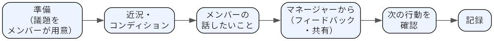

コミュニケーション
この章で学ぶこと
マネージャーにとってのコミュニケーションの役割
1on1 の目的と進め方、やってはいけないこと
傾聴と質問の基本、会議の設計
情報共有の仕組みのつくり方と、同期・非同期のコミュニケーションの使い分け
誤解されにくい伝え方
マネージャーの仕事の多くは、人と話し、情報を集め、伝えることでできている。目標を決めるのも、仕事を任せるのも、フィードバックをするのも、すべてコミュニケーションを通じて行う。グローブは、マネージャーの主な活動として情報の収集、情報の提供、意思決定、他者への働きかけ、模範を示すことを挙げている[Grove2017]。いずれも人との関わりなしには進まない。コミュニケーションがうまくいかないと、どれほど優れた計画も現場で実行されない。この章では、マネージャーが日常的に使うコミュニケーションの道具として、1on1、傾聴と質問、会議、情報共有の仕組み、伝え方を取り上げる。
マネージャーにとってのコミュニケーションの役割
マネージャーのコミュニケーションには、大きく次の 4 つの役割がある。
情報を集める: チームの状況、メンバーの悩みや困りごと、仕事の進み具合、現場で起きている問題を知る。
情報を伝える: 組織の方針、チームの目標、決まったこと、変わったことをメンバーに伝える。
関係をつくる: メンバーとの信頼関係、メンバー同士の関係、他部署との関係をつくる。
人を動かし、育てる: 期待を伝え、仕事を任せ、フィードバックを通じて成長を助ける。
プレイヤーのときは、自分の仕事を進めるための連絡ができていれば十分だった。マネージャーになると、自分が話す相手の数が増えるだけでなく、自分が情報の流れの結節点になる。マネージャーのところで情報が止まると、チーム全体が止まる。逆に、マネージャーが現場の情報を持っていないと、判断を誤る。コミュニケーションは「余った時間にする雑談」ではなく、マネージャーの本業の一部と考える。
1on1
1on1 は、マネージャーとメンバーが 1 対 1 で定期的に行う対話の時間である。日本でも多くの企業で導入されているが、形だけ導入されて「何を話せばよいか分からない」「進捗確認の場になっている」という状態になりやすい。ここでは 1on1 の目的と進め方を説明する。
1on1 の目的
1on1 はメンバーのための時間である。マネージャーが聞きたいことを聞く場ではなく、メンバーが話したいことを話す場と位置付ける。グローブは、1on1 の議題はメンバーが決め、メンバーが主導するべきだとしている[Grove2017]。
1on1 の目的は次のようなものである。
メンバーの困りごとや悩みを早めに知り、一緒に解決する。
メンバーの考え、価値観、キャリアの希望を知る。
フィードバックを伝え、成長を支援する（フィードバックと育成）。
信頼関係をつくり、普段の会話では出てこない話を引き出す。
1on1 で得られるのは、日々の業務の会話では出てこない情報である。「実は最近、別のチームのやり方が気になっている」「家庭の事情で来月から時間の制約がある」「今の仕事に飽きてきた」といった話は、定期的に安心して話せる場がなければなかなか出てこない。
頻度と時間の目安
頻度と時間の目安は、週 1 回 30 分〜隔週 30 分程度である。着任直後や新しく加わったメンバー、難しい仕事に取り組んでいるメンバーとは頻度を高めにし、関係ができて自律的に動けるメンバーとは隔週にするなど、相手に合わせて調整する。ただし、「問題がないから」と月 1 回以下に減らすと、問題が起きたときに気付くのが遅れる。
時間はカレンダーに定期の予定として入れておく。都度調整するやり方だと、忙しい時期ほど 1on1 が後回しになる。場所は、他の人に会話を聞かれない会議室やオンラインの個別の通話を使う。
進め方
1on1 の進め方の一例を図 8 に示す。

図 8 1on1 の進め方の一例
準備: メンバーが話したいことを事前に共有ドキュメントなどに書いておく。マネージャーは前回の記録を読み返す。
近況・コンディション: 最初の数分で、体調や忙しさ、気になっていることを聞く。
メンバーの話したいこと: 時間の大半をここに使う。マネージャーは聞き役に回る。
マネージャーから: 伝えたいフィードバックや共有事項があれば、残りの時間で伝える。
次の行動を確認: 話した結果、誰が何をするかを確認する。
記録: 要点と次の行動を残す。
メンバーが話したいことを持ってこない場合もある。特に 1on1 に慣れていないメンバーは「特にありません」と言いがちである。その場合は、次の話題の例や質問例を使って会話のきっかけをつくる。
話題の例と質問例
1on1 で扱う話題と、そのときに使える質問の例を表 24 に示す。毎回すべてを聞く必要はなく、相手と状況に合わせて選ぶ。
話題 |
質問の例 |
|---|---|
コンディション |
「最近、忙しさはどう？」「仕事以外も含めて、気になっていることはある？」 |
仕事の困りごと |
「今、一番引っかかっていることは何？」「私が手伝えること、取り除けそうな障害はある？」 |
仕事のやりがい |
「最近の仕事で、手応えがあったのはどれ？」「逆に、やっていて気が重い仕事は？」 |
チーム・人間関係 |
「チームの中で、やりにくいと感じる場面はある？」「チームのやり方で変えたいことは？」 |
成長・キャリア |
「1 年後にどんなことができるようになっていたい？」「挑戦してみたい仕事はある？」 |
マネージャーへの要望 |
「私のやり方で、やめてほしいこと、もっとしてほしいことはある？」 |
最後の「マネージャーへの要望」は、聞かれた側が答えにくい質問である。最初は具体的な答えが返ってこなくても、繰り返し聞き、出てきた意見に実際に対応することで、少しずつ本音が出てくるようになる。
記録の残し方
1on1 の記録は、メンバーと共有するドキュメントに残すのがよい。日付ごとに「話したこと」「次の行動（誰が・何を）」を短く書く。共有ドキュメントにすると、メンバーが事前に議題を書き込めるうえ、マネージャーが約束したことを忘れていないか本人も確認できる。
ただし、健康や家庭の事情など、本人が他の人に知られたくない話は共有ドキュメントに書かない。書き残してよいか迷ったら本人に確認する。メンバーの個人的な情報の扱いは、会社のルールにも従う（組織のルールと労務管理）。
やってはいけないこと
進捗報告会にする: 1on1 の時間を仕事の進捗確認で埋めると、メンバーにとっては「上司に報告する時間」になり、本音を話す場ではなくなる。進捗は定例会議やチケット管理など別の仕組みで把握する（仕事を回す）。
直前のキャンセルを繰り返す: 直前のキャンセルや延期が続くと、メンバーは「自分の優先度は低い」と受け取る。どうしても動かす場合は、早めに伝え、代わりの日時をその場で決める。
マネージャーばかり話す: 説教、自慢話、自分の経験談の披露で時間が終わると、メンバーは話す意欲を失う。目安として、メンバーが話す時間を半分以上にする。
聞いたことを放置する: 困りごとを聞いて「検討する」と言ったまま何もしないと、次から話してもらえなくなる。対応できない場合も、できない理由を伝える。
聞いた話を本人の了解なく広める: 1on1 で聞いた話は、本人の了解なしに他の人に話さない。ただし、ハラスメントや健康上の重大な問題など、組織として対応が必要な話は例外であり、その場合の対応は難しい場面への対応を参照する。
傾聴と質問
1on1 に限らず、メンバーから情報を引き出すには、聞く技術が欠かせない。マネージャーは「答えを出す人」と見られやすく、相手の話を最後まで聞かずに助言を始めてしまいがちである。まずは相手の話を最後まで聞き、理解することに集中する。
傾聴の基本
話を途中で遮らない。結論を先取りしない。
パソコンやスマートフォンの画面を見ながら聞かない。オンラインでは、他の作業をせずカメラの方を向く。
相づちやうなずきで、聞いていることを示す。
すぐに評価や助言をしない。相手が助言を求めているのか、まず聞いてほしいのかを見極める。分からなければ「アドバイスがほしい？それとも、まず整理したい？」と聞いてよい。
開かれた質問と閉じた質問
質問には、「はい／いいえ」や一言で答えられる閉じた質問と、相手が自由に答えられる開かれた質問がある。
種類 |
例 |
向いている場面 |
|---|---|---|
閉じた質問 |
「締め切りに間に合いそう？」「A 案と B 案のどちらにする？」 |
事実の確認、判断の確定、話の締めくくり |
開かれた質問 |
「今の進め方で気になっている点は？」「どうしてそう考えた？」 |
相手の考えや状況を引き出す、話を広げる |
1on1 や相談の場では、開かれた質問を中心にする。閉じた質問ばかり続けると、尋問のようになり、相手は聞かれたことにしか答えなくなる。一方、最後に合意内容を確認するときは閉じた質問が役に立つ。
なお、「なぜ失敗したの？」のような「なぜ」の質問は、責められていると受け取られやすい。「何が起きたのか教えてほしい」「どこで判断が難しかった？」のように、事実や状況を尋ねる形に言い換えるとよい。
要約と言い換え
相手の話が一区切りついたら、「つまり、○○が心配ということ？」のように要約や言い換えをして返す。要約には次の効果がある。
自分の理解が正しいかを確認できる。ずれていれば相手が訂正してくれる。
相手は「ちゃんと聞いてもらえている」と感じる。
相手自身が、自分の考えを整理できる。
要約は、相手の言葉をそのまま繰り返すだけでなく、感情にも触れるとよい。「その仕様変更が 3 回目となると、さすがに疲れるよね」のように受け止めると、相手は続きを話しやすくなる。
会議の設計
マネージャーになると、会議に出る時間も、会議を主催する回数も増える。会議は複数の人の時間を同時に使うため、準備不足の会議はチーム全体の時間を浪費する。主催する会議は、次の点を決めてから開く。
目的: 何のための会議か。「情報共有」「意見を出し合う」「決める」のどれかを明確にする。目的によって、必要な参加者も進め方も変わる。
アジェンダ: 話す項目と、それぞれの時間配分。事前に参加者へ共有し、資料があれば先に読んでもらう。
参加者: 目的に必要な人だけを呼ぶ。決める会議には、決める権限を持つ人が必ず出席する。「念のため」で呼ばれた人は、後で議事録を読めば足りることが多い。
決定事項と宿題の記録: 会議の最後に、決まったこと、決まらなかったこと、宿題（誰が・何を・いつまでに）を読み上げて確認し、記録して共有する。
会議を減らす
会議は一度始めると、目的を果たした後も惰性で続きやすい。定期的に、次の観点で会議を見直す。
その会議がなくなったら、何が困るか。困らないなら廃止する。
情報共有だけの会議は、文書やチャットでの共有に置き換えられないか。
時間を短くできないか（60 分を 30 分に、30 分を 15 分に）。
参加者を減らせないか。
会議を減らすことは、メンバーがまとまった作業時間を確保するためにも重要である。特にエンジニアのように集中を要する仕事では、細切れの会議が生産性を大きく下げる（モチベーション）。
情報共有の仕組み
日本の職場では「報連相（報告・連絡・相談）」が大切だと言われる。しかし、マネージャーが「報連相をしっかりするように」と求めるだけでは、情報は集まらない。メンバーが報告をためらう理由の多くは、報告しにくい雰囲気や、報告の手間の大きさにある。マネージャーは、報連相を求める前に、情報が自然に流れる仕組みと雰囲気をつくる。
仕組み: 進捗はタスク管理ツールで見えるようにする、日報や週報の書式を簡単にする、定例会議で困りごとを話す時間を設ける、など、報告の手間を減らす。
雰囲気: 悪い知らせを持ってきた人を責めない。「早く言ってくれて助かった」と伝える。マネージャー自身が自分の失敗や困りごとをオープンに話す。悪い知らせが早く上がってくるかどうかは、チームの心理的安全性に大きく左右される（チームをつくる）。
同期と非同期の使い分け
コミュニケーションには、会議や通話のように同じ時間に参加者がそろう同期のコミュニケーションと、チャットや文書のように各自が都合のよい時間に読み書きする非同期のコミュニケーションがある。どちらにも向き不向きがある。
種類 |
向いていること |
向いていないこと |
|---|---|---|
同期（会議・通話・対面） |
意見が対立している議論、複雑な問題の検討、感情に関わる話、関係づくり |
単純な情報共有、全員がそろう必要のない確認 |
非同期（チャット・文書） |
定型の報告、記録に残したい決定事項、じっくり考えてから答えたい質問、複数の拠点や時間帯をまたぐ共有 |
微妙なニュアンスを伝える話、急ぎの判断、こじれた議論 |
改善を求めるフィードバックや、評価・異動などの重要な話は、チャットや文書だけで済ませず、同期の場で直接伝える。一方、決まったことは同期の場で話した後でも、必ず文書やチャットに残す。口頭だけで伝えたことは、聞いていない人には伝わらず、聞いた人の記憶も時間とともに食い違っていく。
リモートワークでの注意
リモートワークでは、オフィスであれば自然に得られた情報（メンバーの表情、ちょっとした会話、誰が忙しそうか）が得られない。次の点に注意する。
雑談や相談のきっかけが減るため、1on1 や短い定例の場を意識的に設ける。
チャットは文字だけで伝わるため、対面より冷たく、きつく受け取られやすい。短い指摘でも一言添える、絵文字やリアクションを適度に使うなど、受け取る側を想像して書く。
返信が遅いメンバーや発言の少ないメンバーの状況は見えにくい。こちらから声をかける。
「いつ連絡してよいか」「どのくらいで返信すべきか」など、チームの連絡の約束事を決めておく。
決まったことや議論の経緯を文書に残す習慣を、オフィス勤務のとき以上に徹底する。
伝え方
マネージャーの言葉は、メンバーの行動に大きな影響を与える。あいまいな伝え方は、手戻りや誤解の原因になる。次の 3 点を意識する。
結論から話す: 最初に「結論」や「お願いしたいこと」を伝え、その後に詳細を話す。「先に結論を言うと、この案件は来月に延期になった。理由は〜」のように話す。
背景・理由を添える: 決まったことだけを伝えると、メンバーは状況が変わったときに自分で判断できない。「なぜそうするのか」を添えることで、メンバーは目的に沿って自分で考えて動けるようになる（目的と目標を定める）。
決まったことと未決のことを分ける: 「ここまでは決定」「ここはまだ検討中で、来週決める」と明確に分けて伝える。検討中の話を決定事項のように伝えると、後で方針が変わったときにメンバーの信頼を失う。
上から降りてきた方針を伝えるときに「上が決めたことだから」と言うのは避ける。自分が納得していない方針であっても、まず背景を確認し、自分の言葉で説明できるようにしてから伝える。どうしても納得できない点は、上司と話す（上司・他部署との関係）。
また、重要なことは一度言っただけでは伝わらない。目標や方針は、会議、1on1、文書など、場面を変えて繰り返し伝える。
エンジニアのチームでは
文書文化を活用する: エンジニアのチームでは、設計ドキュメントとその設計レビュー、障害の振り返りの報告書（ポストモーテム）など、文書で議論し記録する習慣がある。文書は、その場にいなかった人や後から加わったメンバーにも経緯を伝えられる。マネージャーは、文書を書く時間を正当な仕事として扱い、文書のテンプレートや置き場所を整える。障害報告書は個人の責任追及ではなく、仕組みの改善のために書くものだと繰り返し伝える。
チャットの議論が長引いたら会話に切り替える: チャットのスレッドで意見の応酬が続き、話がかみ合わなくなったら、「15 分だけ通話で話そう」と同期の場に切り替える。そのほうが早く結論が出ることが多い。話した結果は、スレッドに要約して書き戻す。
技術的な話を非エンジニアに伝える: 他部署や上司に技術的な状況を伝えるときは、専門用語を避け、「何が起きているか」「事業やユーザーにどんな影響があるか」「いつまでに何をするか」を中心に話す。
よくある失敗
よくある失敗 |
対策 |
|---|---|
1on1 が進捗報告会になっている |
進捗は別の仕組みで把握し、1on1 はメンバーが議題を決める場にする。 |
忙しくなると 1on1 を真っ先にキャンセルする |
定期の予定として固定し、動かす場合はその場で代わりの日時を決める。 |
メンバーの話を最後まで聞かずに助言を始める |
まず要約して理解を確認し、助言が必要かを相手に聞いてから話す。 |
目的やアジェンダのない会議を開く |
会議の目的、アジェンダ、参加者を決めてから招集し、決定事項と宿題を記録する。 |
「報連相をしっかり」と言うだけで仕組みをつくらない |
報告の手間を減らす仕組みをつくり、悪い知らせを歓迎する態度を示す。 |
重要な話をチャットだけで済ませる |
改善を求める話や評価などの重要な話は、同期の場で直接伝える。 |
口頭で決めたことを記録しない |
決まったことは文書やチャットに残し、関係者に共有する。 |
検討中のことを決定事項のように話す |
決まったことと未決のことを分けて伝える。 |
チェックリスト
メンバー全員と、定期的な 1on1 の予定をカレンダーに入れているか。
1on1 で、メンバーが話す時間がマネージャーが話す時間より長いか。
1on1 で約束したことを、次回までに実行しているか。
この 1 か月で、1on1 を直前にキャンセルしたことはないか。
相手の話を要約して、理解が合っているかを確認しているか。
主催する会議に、目的とアジェンダが事前に示されているか。
会議の決定事項と宿題（誰が・何を・いつまでに）を記録して共有しているか。
この 3 か月で、不要な会議を減らしたり短くしたりしたか。
悪い知らせを持ってきたメンバーに、感謝を伝えているか。
方針を伝えるとき、背景・理由と、未決の事項を合わせて伝えているか。
まとめ
コミュニケーションは、情報を集め、伝え、関係をつくり、人を動かすためのマネージャーの本業である。
1on1 はメンバーのための時間である。定期的に行い、進捗報告会にせず、約束を守る。
開かれた質問と要約を使って、まず相手の話を理解する。
会議は目的・アジェンダ・参加者を決めて開き、決定事項を記録する。不要な会議は減らす。
報連相を求めるだけでなく、情報が自然に流れる仕組みと雰囲気をつくり、同期と非同期を使い分ける。